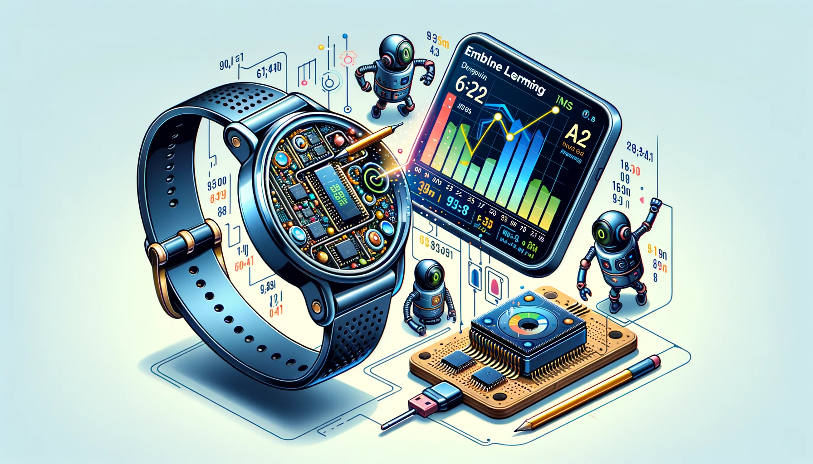

2 Embedded Systems

In the domain of TinyML, embedded systems serve as the bedrock, providing a robust platform where intelligent algorithms can function both efficiently and effectively. Defined by their specialized roles and real-time computational capabilities, these systems act as the convergence point where data and computation intersect on a micro-scale. Tailored to meet the demands of specific tasks, they excel in optimizing performance, energy usage, and spatial efficiency—key considerations in the successful implementation of TinyML solutions.
As we journey further into this chapter, we will demystify the intricate yet captivating realm of embedded systems, gaining insights into their structural design, operational features, and the crucial part they play in enabling TinyML applications. From an introduction to the fundamentals of microcontroller units to a deep dive into the interfaces and peripherals that amplify their capabilities, this chapter aims to be a comprehensive guide for understanding the nuanced aspects of embedded systems within the TinyML landscape.
Understand the definition, characteristics, history, and importance of embedded systems, especially in relation to tinyML.
Examine the embedded system architecture including microcontrollers vs microprocessors, memory types and management, and System on Chip (SoC).
Explore embedded system programming including languages like C and Python, firmware development, and real-time operating systems (RTOS).
Discuss interfaces and peripherals like digital/analog I/O, communication protocols, etc.
Analyze power management considerations, energy-efficient design, and battery management.
Understand real-time characteristics of embedded systems including clocks, timing, task scheduling, and error handling.
Evaluate security, reliability and safety-critical aspects of embedded systems.
Identify future trends and challenges like edge computing, scalability, and market opportunities.
2.1 Basics and Components
2.1.1 Definition and Characteristics
Embedded systems are specialized forms of computing that do not resemble traditional computers. These systems are dedicated to particular tasks and integrate as components within larger devices. Unlike general-purpose computers capable of running a multitude of applications, embedded systems are designed to execute predefined tasks, often with stringent requirements. Due to their task-specific nature, their architecture is optimized for performance and reliability. The defining traits of these systems include:
Dedicated Functionality: These systems are engineered to carry out a specific function or a cluster of closely related functions. This specialization allows for optimization, resulting in enhanced performance and reliability.
Real-Time Operation: A large number of embedded systems function in real-time, necessitating immediate responses to environmental inputs or changes within a set time frame.
Integration with Physical Hardware: Unlike general-purpose computing systems, embedded systems are tightly integrated with physical components, making them more mechanically oriented.
Long Lifecycle: Typically, these systems have an extended lifecycle, continuing to operate for many years post their initial deployment.
Resource Constraints: Often operating under resource limitations, embedded systems require efficient algorithms and software due to restricted computational power and memory.
2.1.2 Historical Background
The lineage of embedded systems dates back to the 1960s, marked by the introduction of the first microprocessor, labeled as Figure 2.1. This groundbreaking development led to the creation of the inaugural embedded system used in the Apollo Guidance Computer, the primary navigational system for the Apollo spacecraft. Over subsequent years, the domain has expanded remarkably, finding utility in diverse sectors such as automotive electronics, consumer electronics, telecommunications, and healthcare.

2.1.3 Importance in tinyML
Within the tinyML framework, embedded systems constitute a vital frontier. The direct integration of machine learning algorithms into these systems enables intelligent, edge-based decision-making, thereby minimizing latency and bolstering security. Here are several factors that underscore the importance of embedded systems in the tinyML ecosystem:
Edge Computing: By localizing computation near the data source, embedded systems amplify efficiency and diminish the need for continuous interaction with centralized data repositories.
Low Power Consumption: Designed for minimal energy usage, embedded systems in tinyML are particularly suited for battery-dependent devices and Internet of Things applications.
Real-Time Analysis and Decision Making: These systems can conduct instantaneous data analysis, facilitating immediate decisions based on the generated insights.
Security and Privacy: Local data processing on embedded systems enhances security and privacy by reducing the likelihood of data interception during transmission.
Cost-Effective: The deployment of machine learning models on embedded systems can be economically advantageous, particularly when data transmission and cloud storage could incur substantial costs.
As we progress further into this chapter, we will uncover the complexities that dictate the operations of embedded systems and examine how they serve as the foundational layer upon which tinyML is built, heralding a future filled with integrated, intelligent, and efficient devices and systems.
2.2 Embedded System Architecture
The architectural layout of embedded systems serves as the schematic that outlines the structure and operations of these specialized entities. It sheds light on the interactions and collaborations among various components within an embedded system. This section will dissect the key elements of the architecture, including microcontrollers, microprocessors, diverse types of memory and their management, as well as the complexities of System on Chip (SoC).
2.2.1 Microcontrollers vs Microprocessors
Comprehending the distinctions between microcontrollers and microprocessors is essential for understanding the basics of embedded system architecture. In this section, we will explore the unique attributes of each:
Microcontrollers
Microcontrollers are compact, integrated circuits engineered to control specific functions within an embedded system. They incorporate a processor, memory, and input/output peripherals within a single unit, as depicted in Figure 2.2, simplifying the overall system design. Microcontrollers are generally employed in applications where computational demands are moderate and cost-effectiveness is a primary consideration.
Characteristics:
- Single-chip solution
- On-chip memory and peripherals
- Minimal energy consumption
- Well-suited for control-oriented tasks

Microprocessors
In contrast, microprocessors are more intricate and serve as the central processing unit within a system. They lack the integrated memory and input/output peripherals commonly found in microcontrollers. These processors are typically present in systems requiring elevated computational power and adaptability. They are suitable for devices where high processing power is a necessity and the tasks are data-intensive.
Characteristics:
- Necessitates external components like memory and input/output peripherals
- Elevated processing power in comparison to microcontrollers
- Greater flexibility for connectivity with diverse components
- Well-suited for data-intensive tasks
2.2.2 Memory Types and Management
Embedded systems utilize a variety of memory types, each fulfilling specific roles. Efficient memory management is vital for optimizing both performance and resource utilization. The following section elaborates on different types of memory and their management within the context of embedded systems:
ROM (Read-Only Memory): This non-volatile memory retains data written during the manufacturing process and remains unaltered throughout the lifespan of the device. It houses firmware and boot-up instructions.
RAM (Random Access Memory): This volatile memory stores transient data generated during system operation. It is faster and permits read-write operations, but data is lost when power is disconnected.
Flash Memory: This is a type of non-volatile memory that can be electrically erased and reprogrammed. It is commonly used for storing firmware or data that must be retained between system reboots.
Memory Management:
Static Memory Allocation: In this approach, memory is allocated prior to runtime and remains fixed throughout system operation.
Dynamic Memory Allocation: Here, memory is allocated during runtime, offering flexibility but introducing the risk of increased complexity and potential memory leaks.
2.2.3 System on Chip (SoC)
The majority of embedded systems are Systems on Chip (SoCs). An SoC embodies an advanced level of integration technology, incorporating most components required to construct a complete system onto a single chip. It often includes a microprocessor or microcontroller, blocks of memory, peripheral interfaces, and other requisite components for a fully operational system. Below is a detailed examination of its characteristics and applications:
Integration of Multiple Components: SoCs consolidate multiple components like CPUs, memory, and peripherals onto a single chip, facilitating higher levels of integration and reducing the need for external components.
Power Efficiency: The high degree of integration often results in SoCs being more power-efficient compared to systems assembled from separate chips.
Cost-Effectiveness: The integrated nature leads to reduced manufacturing expenses, as fewer individual components are needed.
Applications: SoCs are employed in a diverse range of sectors including mobile computing, automotive electronics, and Internet of Things devices where compact form factors and energy efficiency are highly valued.
Here is a list of widely recognized SoCs that have found substantial applications across various domains:
Qualcomm Snapdragon: Predominantly used in smartphones and tablets, these SoCs offer a blend of processing power, graphics, and connectivity features.
Apple A-series: Custom-developed SoCs by Apple, used in their lineup of iPhones, iPads, and in certain versions of Apple TV and HomePod. Notable examples include the A14 Bionic and A15 Bionic chips.
Samsung Exynos: Developed by Samsung, these SoCs are extensively used in their range of smartphones, tablets, and other electronic devices.
NVIDIA Tegra: Initially intended for mobile devices, these SoCs have found significant applications in automotive and gaming consoles, such as the Nintendo Switch. A visual representation can be seen below in Figure 2.3.
Intel Atom: Employed in a wide array of systems including netbooks, smartphones, and even embedded systems, these SoCs are known for their power efficiency.
MediaTek Helio: Commonly found in budget to mid-range smartphones, these chips offer a balanced mix of power efficiency and performance.
Broadcom SoCs: Extensively used in networking equipment, Broadcom provides a variety of SoCs with diverse functionalities, including those optimized for wireless communications and data processing.
Texas Instruments (TI) OMAP: Previously popular in smartphones and tablets, these SoCs offered a range of functionalities including multimedia processing and connectivity.
Xilinx Zynq: Mainly used in embedded systems for industrial automation and in applications requiring high levels of data processing, such as advanced driver-assistance systems (ADAS).
Altera SoC FPGA: Now a part of Intel, these SoCs combine FPGA technology with ARM cores, offering flexibility and performance for a range of applications including automotive and industrial systems.

Each of these Systems on Chip (SoCs) offers a unique array of features and capabilities, tailored to meet the diverse demands of an ever-evolving technological landscape. They consolidate multiple components onto a single chip, delivering power efficiency, cost-effectiveness, and compact solutions suitable for contemporary electronic devices.
2.3 Embedded System Programming
Programming for embedded systems differs significantly from traditional software development, being specifically designed to navigate the constraints of limited resources and real-time requirements commonly associated with embedded hardware. This section aims to shed light on the distinct programming languages employed, delve into the subtleties of firmware development, and explore the pivotal role of Real-time Operating Systems (RTOS) in this specialized domain.
2.3.1 Programming Languages: C, C++, Python, etc.
Choosing the right programming languages is essential in embedded systems, often emphasizing direct hardware interaction and memory usage optimization. Here, we will examine the unique attributes of these languages and how they differ from those commonly used in more conventional computing systems:
C: Often considered the bedrock of embedded systems programming, the C language enables direct engagement with hardware, providing capabilities for bit-wise operations and memory address manipulation. Its procedural nature and low-level functionalities make it the preferred choice for resource-constrained environments, particularly for firmware development.
C++: Building upon the foundational principles of C, C++ incorporates object-oriented features, promoting organized and modular code development. Despite its inherent complexity, it is employed in scenarios where higher-level abstractions do not undermine the detailed control offered by C.
Python: Although not a traditional choice for embedded systems due to its higher memory consumption and runtime delays, Python is gradually gaining traction in the embedded sphere, particularly in systems with less stringent resource limitations. A specialized variant known as MicroPython has been developed, optimized for microcontrollers and retaining the simplicity and ease of Python. This flexible programming paradigm facilitates quick prototyping and development, as illustrated by the code snippet below that interfaces with pins on a PyBoard.
import pyb # Package from PyBoard
# turn on an LED
pyb.LED(1).on()
# print some text to the serial console
print('Hello MicroPython!')Comparison with Traditional Systems: In contrast to mainstream computing systems, where languages like Java, Python, or JavaScript are lauded for their ease of development and extensive libraries, embedded systems favor languages that provide fine-grained control over hardware and opportunities for optimization, all while carefully navigating resource constraints.
2.3.2 Firmware Development
Firmware development in embedded systems involves creating programs that are permanently stored in the device’s non-volatile memory, ensuring consistent operation. This section outlines how firmware development diverges from software development in traditional computing systems:
Resource Optimization: The imperative for continual optimization is paramount, enabling the code to operate within the limitations of restricted memory and processing capabilities.
Hardware Interaction: Firmware often maintains a close relationship with hardware, requiring an in-depth understanding of hardware components and their functionalities.
Lifecycle Management: Firmware updates are less frequent than software updates in traditional systems, necessitating rigorous testing to prevent failures that could lead to hardware malfunctions.
Security Concerns: Given its integral role, firmware is a potential target for security breaches, necessitating meticulous attention to security aspects, including secure coding practices and encryption protocols.
2.3.3 Real-time Operating Systems (RTOS)
RTOSs serve as the backbone for real-time embedded systems, managing task execution in a predictable and deterministic manner. This is a marked departure from operating systems in general-purpose computing, as outlined below:
Deterministic Timing: RTOSs are designed to respond to inputs or events within a well-defined time frame, fulfilling the stringent time-sensitive requirements of many embedded systems.
Task Prioritization: These systems enable task prioritization, allowing critical tasks to receive preferential processing time over less crucial tasks.
Microkernel Architecture: Many RTOSs employ a microkernel architecture, epitomizing efficiency and minimalism by focusing solely on essential functionalities.
Memory Management: Memory management in RTOSs is often more streamlined compared to their counterparts in traditional operating systems, contributing to quick response times and operational efficiency.
Examples of RTOS: Notable instances in this category include FreeRTOS, RTEMS, and VxWorks, each providing unique features tailored to meet the varied needs of different embedded systems applications.
2.4 Interfaces and Peripherals
Embedded systems engage with the external environment through a range of interfaces and peripherals, which are often more specialized and streamlined than those in general-purpose systems. Let us explore these in detail:
2.4.1 Digital I/O
Digital Input/Output (I/O) interfaces are fundamental to embedded systems, enabling interaction with other devices and components. For instance, a digital I/O pin may be used to read a binary signal (0 or 1) from sensors or to control actuators. In embedded systems, these I/O ports often operate under strict timing constraints, a
requirement less common in general-purpose computing systems. Moreover, these systems are usually programmed for specific, optimized operations on digital signals, sometimes needing to function in real-time or near-real-time settings.
2.4.2 Analog Interfaces
Analog interfaces in embedded systems are vital for interacting with a predominantly analog world. These interfaces may include components like Analog-to-Digital Converters (ADCs) and Digital-to-Analog Converters (DACs). For example, ADCs can be employed to read sensor data from environmental sensors such as temperature or humidity sensors, converting real-world analog data into a digital format that the microcontroller can process.
In contrast to general-purpose systems, embedded systems often utilize analog interfaces more directly and frequently, especially in sensor-integrated applications that require the conversion of a broad range of analog signals into digital data for further processing and analysis.
If you examine Figure 2.4 closely, you will notice indications of I/O pinouts for analog, digital, and communication layouts.

2.4.3 Communication Protocols (SPI, I2C, UART, etc.)
Communication protocols act as the channels that enable communication between various components within or connected to an embedded system. Let us examine some commonly used ones:
SPI (Serial Peripheral Interface): This synchronous serial communication protocol is primarily used for short-distance communication in embedded systems. For instance, it is frequently employed in communications with SD cards and TFT displays.
I2C (Inter-Integrated Circuit): This multi-master, multi-slave, packet-switched, single-ended, serial communication bus is widely used in embedded systems to connect low-speed peripherals to motherboards, embedded systems, or cell phones. It is valued for its simplicity and low pin count.
UART (Universal Asynchronous Receiver-Transmitter): This protocol enables asynchronous serial communication between devices. It is commonly used in embedded systems to transmit data between devices over a serial port, such as sending data logs from a sensor node to a computer.
Compared to general-purpose systems, communication protocols in embedded systems are often more finely tuned for speed and reliability, especially in critical applications where data transmission integrity is crucial. Additionally, these protocols may be directly integrated into the microcontroller, facilitating more cohesive and seamless interactions between components, a feature less commonly observed in general-purpose systems.
2.5 Power Management in Embedded Systems
Power management is a critical focus area in the design of embedded systems, influencing both the system’s efficiency and its applicability in real-world scenarios. The wide range of applications for embedded systems, from handheld devices to industrial equipment, highlights the need for meticulous power management. Let us explore this essential aspect of embedded systems:
2.5.1 Power Consumption Considerations
In embedded systems, power consumption is a key factor that dictates both performance and longevity. Microcontrollers in these systems usually operate within a voltage range of 1.8V to 5V, with current consumption varying from microamperes (μA) to milliamperes (mA) during active states. In sleep or standby modes, the current consumption can drop to nanoamperes (nA), extending battery life.
In contrast, general-purpose computing systems like desktop computers consume power on the scale of tens to hundreds of watts, several orders of magnitude higher than embedded systems. This significant difference underscores the need for careful power management in embedded systems, where the power budget is often much more limited.
Managing power consumption involves a complex interplay of factors such as operating voltage, clock frequency, and the specific tasks the system performs. Engineers often find themselves balancing power consumption against performance and responsiveness, navigating a complex landscape of trade-offs.
2.5.2 Energy-Efficient Design
Incorporating energy efficiency into the design phase is crucial for the successful deployment of embedded systems. Techniques like dynamic voltage and frequency scaling (DVFS) are often employed, allowing the system to adjust voltage and frequency dynamically based on processing needs, thereby optimizing power consumption.
Additionally, the use of low-power modes, where non-essential peripherals are deactivated or clock frequencies are reduced, can significantly conserve energy. For example, deep sleep modes that consume as little as 100 nA can dramatically extend battery life, particularly in battery-operated embedded systems.
The architecture of the microcontroller, especially its instruction set architecture (ISA), is often highly specialized to eliminate unnecessary complexities that could increase power consumption. This specialization allows operations to be executed in fewer cycles compared to general-purpose processors, reducing the power consumed per operation. Moreover, these specialized ISAs are designed to efficiently execute the specific tasks that the embedded system is intended to perform, optimizing the execution path and thereby saving energy.
2.5.3 Battery Management
Managing batteries is an integral component of power management strategies in embedded systems. The goal is to maximize battery life without sacrificing performance. Battery-powered embedded systems often use lithium-ion or lithium-polymer batteries due to their high energy density and rechargeable features. These batteries typically have a voltage range of 3.7V to 4.2V per cell. For example, the Nicla Vision utilizes a 3.7V battery, as shown in Figure 2.5.

By focusing on these elements, engineers can create systems that not only meet functional requirements but do so in a manner that reflects a deep understanding of the broader impacts of technology on society and the environment.
Engineers are tasked with implementing methods such as effective charge regulation, protection against voltage spikes, and thermal monitoring to ensure the longevity and health of the battery. Additionally, the incorporation of systems that can tap into renewable energy sources like solar or kinetic energy can augment battery reserves, leading to enduring and eco-friendly solutions.
The emphasis on power management is driven by the imperative to make the most of available resources, prolong battery longevity, and minimize operational expenditures. In scenarios where the embedded systems are situated in remote or hard-to-reach locations, adept power management can substantially cut down on the frequency of maintenance visits, thereby guaranteeing continuous and seamless functionality.
It’s fair to assert that power management goes beyond being a mere technical specification in embedded systems; it serves as a pivotal factor that can either make or break the success of a project. Significant engineering effort is channeled into fine-tuning power management approaches, aiming to develop systems that are not just operationally efficient but also environmentally sustainable. This reflects a profound dedication to both technological innovation and excellence within the realm of embedded systems.
2.6 Real-Time Characteristics
Within the complex tapestry of embedded systems, real-time attributes serve as essential threads, interlacing various components and tasks into a unified, responsive whole. This element, often specific to embedded systems, occupies a vital role in both their architecture and functionality, endowing them with the nimbleness and accuracy needed for timely interaction with their surroundings. Let’s examine the nuances that underscore the real-time attributes of embedded systems:
2.6.1 Real-time Clocks
Real-time clocks (RTCs) hold a central position in embedded systems, offering an accurate time benchmark that directs the system’s activities. These clocks frequently come with battery backups to maintain reliable timekeeping, even when the primary power source is compromised. The role of RTCs is more critical and widespread in embedded systems compared to general-purpose computing, where timekeeping, while important, usually doesn’t govern the core operations of the system.
For example, in the realm of industrial automation, RTCs facilitate the precise coordination of tasks, ensuring synchronized and timely processes. They are particularly crucial in scenarios requiring time-stamped data, such as environmental monitoring systems where the accuracy and time relevance of data are imperative.
2.6.2 Timing and Synchronization
Timing and synchronization stand as defining features of embedded systems, requiring various components and processes to operate in concert. The essence of a real-time embedded system is shaped by its capability to execute tasks within a specified time window. Such systems often have rigorous timing constraints, necessitating synchronization methods that are both sturdy and exact.
In the context of automotive control systems, the synchronized and timely operation of diverse sensors and actuators is imperative for both safety and peak performance. This sharply contrasts with general-purpose systems, where timing, though managed, usually lacks immediate and critical consequences.
2.6.3 Task Management and Scheduling
In the world of embedded systems, the management and scheduling of tasks are crucial for effective real-time responses. Task schedulers in these systems often use techniques like priority scheduling, where tasks are ranked by importance, allowing higher-priority tasks to interrupt those of lower priority. This is especially critical in systems where some functions have greater urgency.
For example, in medical devices such as pacemakers, the punctual delivery of electrical impulses is a high-priority task, and the scheduler must give it precedence over all other activities to ensure patient safety. This level of refined scheduling and task management sets embedded systems apart from the more adaptable but less deterministic scheduling seen in general-purpose systems.
2.6.4 Error Handling and Fault Tolerance
To enhance their real-time features, embedded systems frequently incorporate mechanisms for error detection and fault resilience. These are engineered to swiftly identify and rectify errors or to sustain system functionality even when faults occur. In aviation control systems, for instance, real-time fault tolerance is essential for maintaining the stability and safety of drones. This meticulous approach to error management is somewhat unique to embedded systems, accentuating the critical nature of many such applications.
The real-time attributes of embedded systems distinguish them, creating an environment where accuracy, synchrony, and prompt responses are not optional but obligatory. These attributes resonate across a wide range of applications, from automotive systems to industrial automation and healthcare devices, highlighting the role of embedded systems as quiet yet potent conductors of a technologically synchronized world. Through their real-time features, embedded systems offer solutions that not only satisfy functional needs but do so with a degree of precision and dependability that is both extraordinary and essential in today’s world.
2.7 Security and Reliability
In an increasingly interconnected and tech-dependent world, the issues of security and reliability have risen to become primary considerations in system engineering. This is especially true for embedded systems, which often serve as key components in critical infrastructures and applications, thereby raising the stakes considerably. Let’s explore the crucial elements that fortify the bastion of security and reliability in embedded systems:
2.7.1 Secure Boot and Root of Trust
Embedded systems are increasingly central to a variety of critical applications, making it imperative to assure their authenticity and integrity from the moment they boot up. The secure boot sequence serves as a foundational element in this security framework, permitting the system to run only code that has been authenticated and deemed trustworthy. This is often augmented by a “Root of Trust,” a stable and secure environment, typically hardware-based, that validates the initial firmware and each subsequent layer of software during the boot-up sequence.
For example, in financial settings involving Point-of-Sale (POS) terminals, a secure boot mechanism guarantees that the firmware remains intact and secure, thereby preventing any malicious alterations that could lead to significant data breaches. Likewise, in the realm of home automation, a strong secure boot process acts as a barrier to unauthorized access, thereby protecting user data and privacy.
2.7.2 Fault Tolerance
Fault tolerance is an essential quality in embedded systems, granting them the ability to maintain functionality even when faced with faults or system failures. This resilience is achieved through various means such as redundancy, where vital components are replicated to assume control in the event of a failure, or via sophisticated error detection and correction methods.
In sectors like aerospace and aviation, fault tolerance is not merely an advantageous feature but an obligatory specification. For instance, aircraft control systems utilize multiple redundant configurations that operate in parallel to assure uninterrupted functionality, even if a component fails. This degree of fault tolerance provides a heightened level of reliability, enabling the system to endure failures without disastrous outcomes, a feature that distinguishes it from conventional computing systems.
2.7.3 Safety-Critical Systems
Safety-critical systems are defined as those where a malfunction could lead to loss of life, substantial property damage, or environmental degradation. Such systems demand rigorous design protocols to guarantee the highest levels of reliability and safety. Embedded systems falling under this classification often comply with stringent development guidelines and are subject to exhaustive testing to confirm their safety and reliability metrics.
For instance, in automotive safety features like Anti-lock Braking Systems (ABS) and Electronic Stability Control (ESC), embedded controllers are crucial. These controllers are engineered in accordance with rigorous standards like ISO 26262, ensuring they meet the elevated safety and reliability criteria essential for safeguarding lives. In the healthcare sector, devices such as pacemakers and infusion pumps are categorized as safety-critical, where the dependability of embedded systems can quite literally be life-altering.
The focus on security and reliability in embedded systems is of paramount importance, a point that is often underestimated by many. As these systems become increasingly woven into the fabric of our everyday lives and critical infrastructure, the principles of security and reliability serve as guiding lights in their development and deployment. Through features like secure booting and fault tolerance, these systems offer not just operational efficiency but also a layer of trust and security, providing a steadfast and secure anchor in a rapidly evolving technological landscape. These foundational tenets shape today’s embedded systems, molding them into dependable stewards and proficient operators in various critical domains of contemporary society.
2.8 Future Trends and Challenges
Arm, the leading producer of microcontrollers, has reached a milestone by shipping an unprecedented 8.0 billion chips, either directly or through its partners. This takes the total number of chips shipped to date to an astounding quarter of a trillion, or 250 billion (ARM.com)!
As we find ourselves at the threshold of a new era marked by extraordinary growth in the embedded systems sector, it becomes both exhilarating and imperative to scrutinize the emerging trends and challenges that lie ahead. From the expanding horizons of edge computing to the imperatives of scalability, the landscape is poised for transformation, unveiling new realms of both opportunities and challenges. Let’s explore the evolving frontier that awaits embedded systems:
2.8.1 Edge Computing and IoT
With the rapid expansion of the Internet of Things (IoT), edge computing is gaining increasing prominence. Essentially, edge computing enables data to be processed closer to its source, thereby reducing latency and alleviating the burden on centralized data centers. This shift in computing paradigms is anticipated to revolutionize embedded systems, endowing them with enhanced processing power and the intelligence to perform intricate tasks on-site.
Additionally, as the IoT is projected to include billions of interconnected devices worldwide, embedded systems are slated to be the linchpin in ensuring smooth connectivity and interoperability among a diverse set of devices. This interconnected ecosystem is expected to enable real-time analytics and decision-making, laying the groundwork for more intelligent cities, industries, and households. The challenge resides in crafting systems that are secure, energy-efficient, and adept at managing the anticipated data deluge effectively.
2.8.2 Scalability and Upgradation
As the landscape of embedded systems continues its evolutionary trajectory, the focus will increasingly turn towards scalability and ease of upgradation. Systems will be required to adapt to evolving technologies and user needs without undergoing extensive modifications. This necessitates modular architectures and adherence to open standards, facilitating the effortless incorporation of new functionalities and features.
Moreover, in light of rapid technological advancements, embedded systems will need to incorporate capabilities for remote updates and maintenance to ensure their continued relevance and longevity. The responsibility will fall on the shoulders of developers and manufacturers to engineer systems that not only satisfy current needs but are also prepared for future enhancements, thereby securing a path for sustainable and progressive development.
2.8.3 Market Opportunities
The market landscape for embedded systems is on the cusp of dynamic changes. As various industries accelerate their adoption of automation and digital transformation, the demand for advanced embedded systems is set to skyrocket. The integration of Artificial Intelligence (AI) and Machine Learning (ML) into embedded systems is expected to offer unparalleled levels of intelligence and automation.
At the same time, burgeoning opportunities are emerging in sectors like consumer electronics, automotive, healthcare, and industrial applications. While this growth presents enormous potential for innovation, it also introduces challenges such as heightened competition and the necessity for adherence to evolving regulatory frameworks. Companies entering this arena will need to exhibit agility, innovation, and adaptability to the shifting market conditions in order to establish a competitive edge.
2.9 Conclusion
The table provides a side-by-side comparison between these two distinct types of computing systems, covering a range of categories including processing power, memory capabilities, user interface, and real-time functionalities, among others. The aim of this comparative analysis is to offer readers a concise yet thorough understanding of the unique attributes and specificities of both conventional and embedded computing systems. This, in turn, enables a more nuanced and informed grasp of their respective roles in today’s computing landscape.
| Category | Traditional Computing System | Embedded System Architecture |
|---|---|---|
| Hardware Characteristics | ||
| Processing Power | High (Multi-core processors) | Moderate to Low (Single/Multi-core, optimized for specific tasks) |
| Memory | High (Upgradable) | Limited (Fixed) |
| Storage | High (Upgradable) | Limited (Fixed or expandable to a certain extent) |
| Hardware Scalability | High (Can upgrade various components) | Low (Hardware is often fixed and focused) |
| Software Characteristics | ||
| Operating System | General Purpose (Windows, Linux, macOS) | Real-Time Operating System (RTOS) or No OS |
| Development Flexibility | High (Supports multiple programming languages and frameworks) | Moderate (Focused on specific programming languages and tools) |
| Performance & Efficiency | ||
| Power Consumption | High | Low (Optimized for energy efficiency) |
| Real-Time Capabilities | Limited (Not optimized for real-time tasks) | High (Designed for real-time tasks) |
| User Interaction | ||
| User Interface | Complex (GUI-Based) | Simple or None (Can be GUI, command-line, or none) |
| Connectivity | Extensive (Multiple ports and connectivity options) | Limited (Focused on necessary connectivity options) |
| Lifecycle & Maintenance | ||
| Maintenance | Regular Maintenance Required | Low Maintenance (Set up to run specific tasks consistently) |
| Lifecycle | Shorter (Due to rapid technological advancements) | Longer (Designed to perform specific tasks over a long period) |
| Cost and Use Cases | ||
| Cost | Variable (Can be high depending on specifications) | Generally Lower (Due to focused functionalities) |
| Use Cases | General (Various applications across sectors) | Specific (Dedicated to particular tasks or applications) |
As we gaze into the future, it’s clear that the realm of embedded systems stands on the cusp of a transformative era, characterized by groundbreaking innovations, abundant opportunities, and formidable challenges. The horizon is replete with the promise of enhanced connectivity, heightened intelligence, and superior efficiency, carving out a trajectory where embedded systems will serve as the guiding force behind society’s technological progress. The path forward is one of discovery and adaptability, where the confluence of technological prowess and creative ingenuity will sculpt a future that is not only rich in technological advancements but also attuned to the intricate and continually shifting needs of a dynamic global landscape. It’s a field teeming with possibilities, inviting trailblazers to embark on a journey to define the parameters of a bright and flourishing future.
2.10 Exercises
Now would be a great time for you to get your hands on a real embedded device, and get it setup.
If you want to play with an embedded system, try out the Nicla Vision